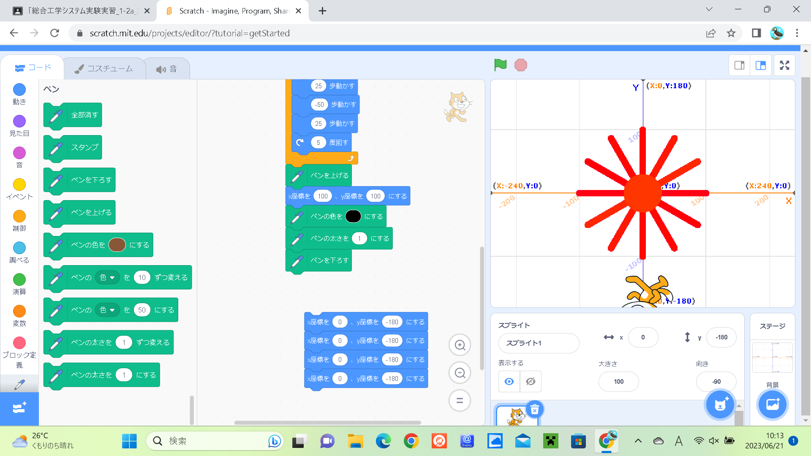
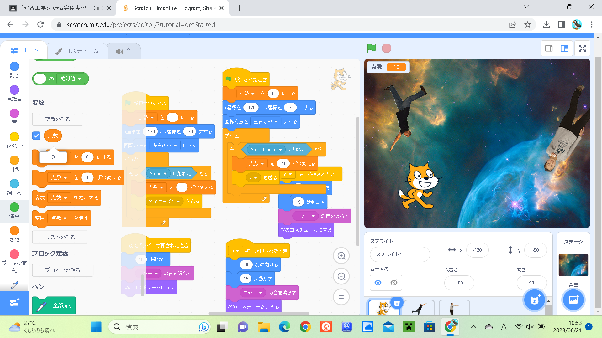

1週目のレポート ： 公大高専１年実習I-1
2a班09番 マル
第1週目
1-1 サイエンスアート

1.内容
スクラッチを使って線を書くプログラムを作りました。最初に猫を動かすプログラム、ペンの追加、円のような図形作成をして、サイエンスアートの基本的な作り方を学びました。
2.感想
スクラッチは中学校で触っていましたが、サイエンスアート作成などはしたことがなかったので、新しい体験ができて、とても良かったです。 また、プログラムで簡単なサイエンスアートの作り方を知ることができました。
1-2 ゲーム

1.内容
スクラッチで猫が移動したり、リンゴが触れると消えたりするプログラムを作成して、猫がリンゴをキャッチするゲームを作りました。
2.感想
スクラッチでサイエンスアートより複雑なゲームのプログラムを作って、プログラミングとはどういうものなのかを少し知ることができたので、とても良かったです。 また、スクラッチのプログラミングを知ることができました。
1-3 ホームページ作成
私のホームページ
1.内容
GitHubでマークアップ言語の1つであるHTMLを体験しました。また、そのHTMLでホームページを作りました。
2.感想
マークアップ言語を触ったことがなく、ホームページも作ったことがなかったので、とても良い体ができました。それから、ホームページ作成を通して、HTMLについて学ぶことができました。また、GitHubでのホームページ作成方法を知ることができました。